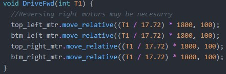
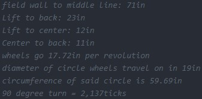
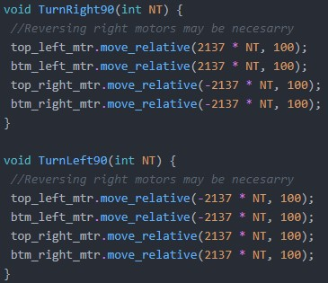

Autonomous Code
Solution:
I took an unsusual approach for the auton this year because I wanted to avoid the normal trouble shooting phase. I tried to accomplish this by measuring distances and translating those measurements in inches to encoder units so you can input real world inches into the code and get an output in encoder units. My journey started by figuring out the circumfrence of the wheels on our robot, to do this I employed the use of the formula 2ℼr, the radius of the wheels we were using was 2 so the circumfrence was 12.57 inches I did some reasearch and found that an X-Drive makes the robot go 1.41 times farther per wheel rotation (found here) so I multipled 12.57 by 1.41 to get the real distance per revolution of the drive train, that being 17.72 inches. Now that I have the distance per revolution I can find the encoder ticks per revolution which is 1800 per revolution for the gearset I an currently using (found here). With these found I can take the input of inches divide it by 17.72 to get the revolutions made in that distance. That is then multiplied by 1800 to calculate how many ticks are travesed and that is output as a value to the motors allowing them to move to where I need them.
 Problem: Overcoming turns without troubleshooting process.
Solution:
I went through a similar process for this section however it was slightly different from the one above. Because the X-Drive does not effect turns I used the original value of 12.57 inches. To figure out the distace the wheels need to travel in order to turn 90 degrees I took the distance from one wheel to the opposite wheel to find a diameter which was divided by 2 to get a radius (9.5 inches), this was put into 2ℼr to find the circumfrence of 59.69 inches. When I put this information into the code I took on e quarter of the circumfrence of the circle and divided it by the circumfrence of the wheels and multiplied it by 1800 to find the amount of ticks per 90 degree rotation (2,137 ticks) and input that into the motor ties the number of times I wanted to rotate.
Problem: Drive Base Change
Solution:
The Update of the drive base changed how the auton needed to be programed on a fundamental level because the 1.4x distance increase from the x-drive was gone and the center our our tuns was not located at the front of out robot instead of the center of the drive base. To account for these changes a few things needed to happen first I redid the distance calculations for the wheels so that they did not account for the x-drive distance increase so they now look like this (reference image 1).